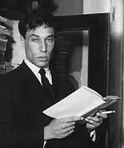

Литература серебряного века
Борис Пастернак родился в Москве, в семье художника  Леонида Пастернака и пианистки Розалии Кауфман.
Поэт участвовал во встречах московского издательства символистов «Мусагет», был членом футуристской литературной группы «Центрифуга». В 1913 году Пастернак опубликовал своё первое стихотворение, а уже в конце этого же года выпустил собственную книгу стихотворений «Близнец в тучах». Через три года вышел и второй сборник Пастернака — «Поверх барьеров».
Вышел сборник «Темы и вариации», появился цикл «Высокая болезнь» и роман в стихах «Спекторский». В конце 1920-х годов Пастернак дописал «Охранную грамоту» –– автобиографические заметки
В 1946 году Пастернак начал писать роман «Доктор Живаго».В 1955 году Пастернак закончил роман. Однако советские редакции не спешили его печатать. О романе узнал крупный итальянский издатель и предложил выпустить произведение. Пастернак согласился и передал экземпляр романа.
23 октября 1958 года Шведский комитет присудил Пастернаку звание Нобелевского лауреата и премию с формулировкой «за выдающиеся заслуги в современной лирической поэзии и в области великой русской прозы».